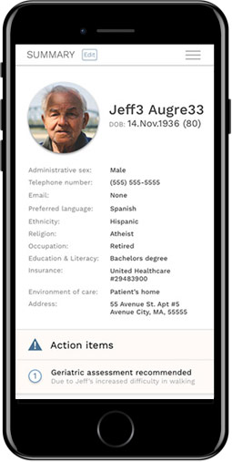

Precision Prism will provide the nation with an open source, baseline design for viewing and interacting with precision medicine information in order to deliver it to the hands of patients, clinicians, and care teams to make faster, more informed decisions.
The amount of data Precision Medicine will bring is exciting but vast. We're designing ahead of the data firehose for when people have access, people can make sense of it, take action, and prosper.
We'll see and present data across all the determinants of health:

A health record tailored to you.
For the first time, a single health record will accommodate you – whether you're a clinician, patient, or the care team. From pediatric to geriatric, to everywhere in between, a health record will finally evolve with all of life's moments.
Sharing is caring.
Craft your care team and keep them informed so they can better help you. Or maybe you're looking to help a loved one or even researchers with the next moonshot. Whichever the cause, go for it!
Getting there is equal parts smart technology, healthcare reform, and literacy. We’re here to help with designing the future of healthcare while evangelizing for the entire system to evolve to better serve patients.
It all starts with sharing a vision.
Let's Collaborate